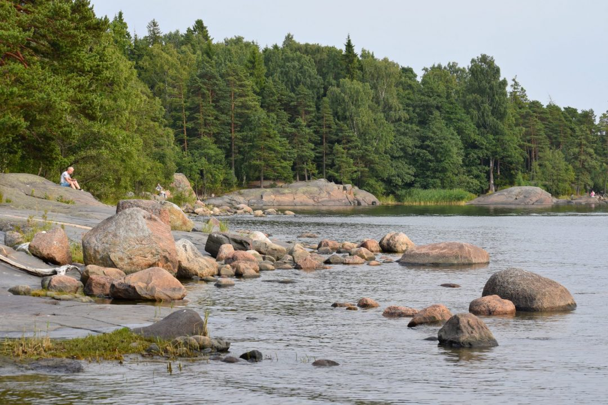
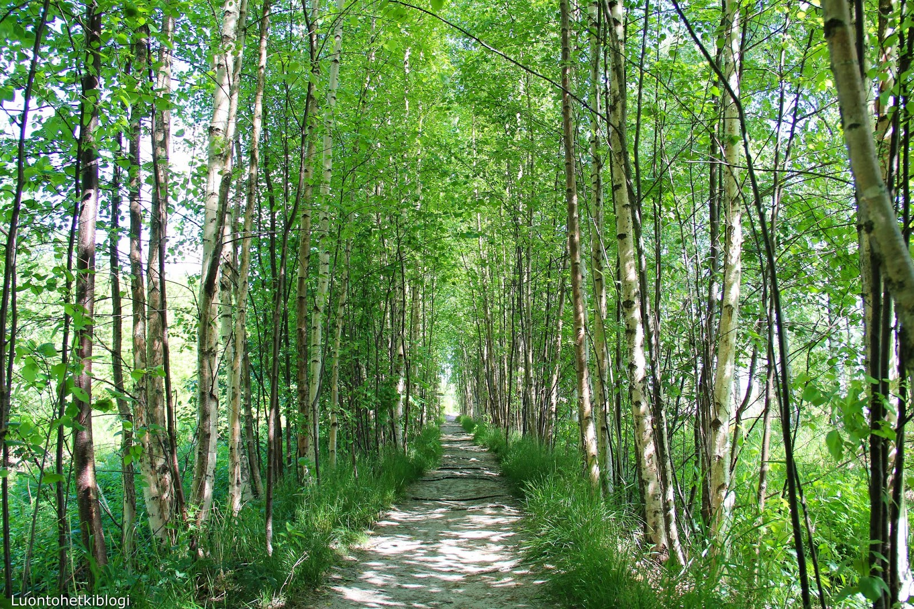
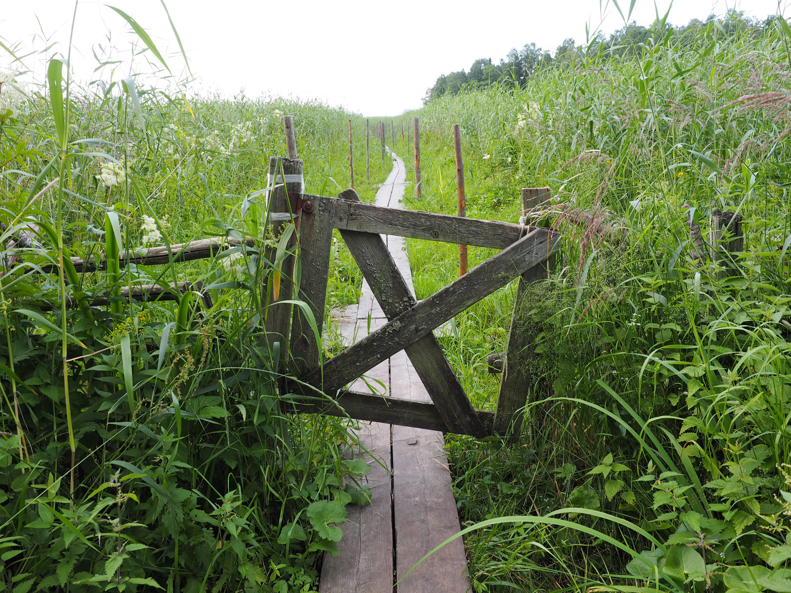
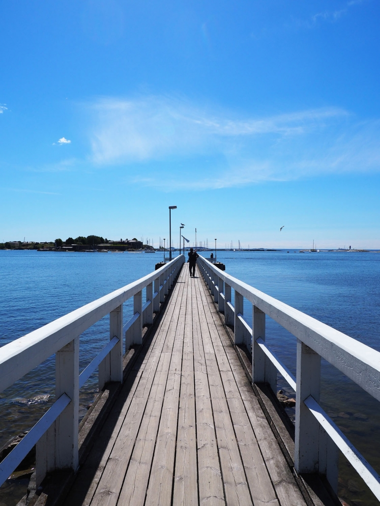
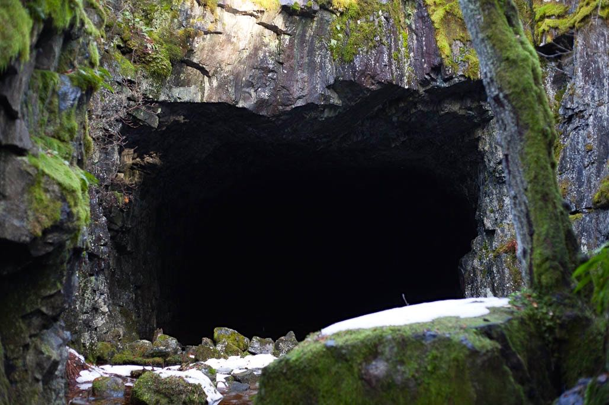

Ulkoilu
Uutelan luontopolku
"Uutelan ulkoilualue sijaitsee Vuosaaren kaakkoisniemessä. Se on perustettu vuosina 1952-1953 ja sen pinta-ala on 105 ha. Alueen luonto on monipuolista ja pienipiirteistä. Siellä vaihtelevat kuivat ja tuoreet kangasmetsät sekä paljaat kalliot."
Katso täältä lisää!Pornaistenniemen luontopolku
"Pornaistenniemen kahdeksan hehtaarin tervaleppälehto on lajistoltaan monimuotoinen. Se rauhoitettiin luonnonsuojelualueeksi vuonna 2016. Alueelta on löydetty 56 kääpä- ja 99 orvakkalajia, mikä on korkeimpia tutkittuja määriä Suomessa."
Katso täältä lisää!Lammassaari
"Lammassaari on suojeltu saari Vanhankaupunginkosken naapurissa Arabianrannan läheisyydessä. Saari on mainio kohde ulkoiluun ja retkeilyyn. Sinne vie esteetön pitkospolku Pornaistenniemeltä, Vanhankaupunginkosken kävelysillan läheltä."
Katso täältä lisää!Harakka
"Harakka on saari Helsingin Kaivopuiston edustalla. Saari on noin 500 metriä pitkä, kahdeksan hehtaarin kokoinen ja sadan metrin päässä Kaivopuiston rannasta."
Katso täältä lisää!Mustavuori
"Mustavuori kuuluu valtakunnalliseen lehtojensuojeluohjelmaan sekä valtakunnallisesti arvokkaisiin rakennetun ympäristön kohteisiin."
Katso lisää!Kuusiluoto

"Kuusiluoto on saari keskellä Vanhankaupunginselkää. Saari on yleistä virkistysaluetta, sinne johtaa vähän yli kilometrin pituinen pitkospuureitti läpi Vanhankaupunginlahden suojelualueen laajan ruovikon."
Katso täältä lisää!